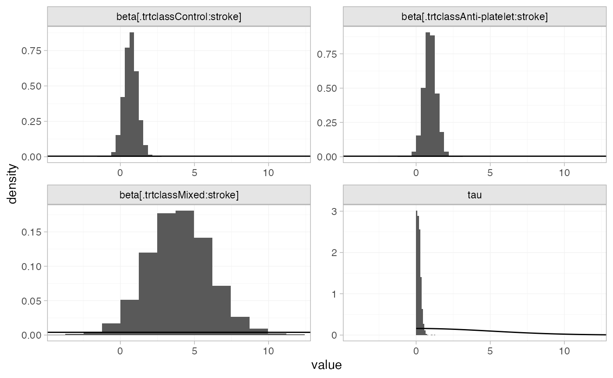
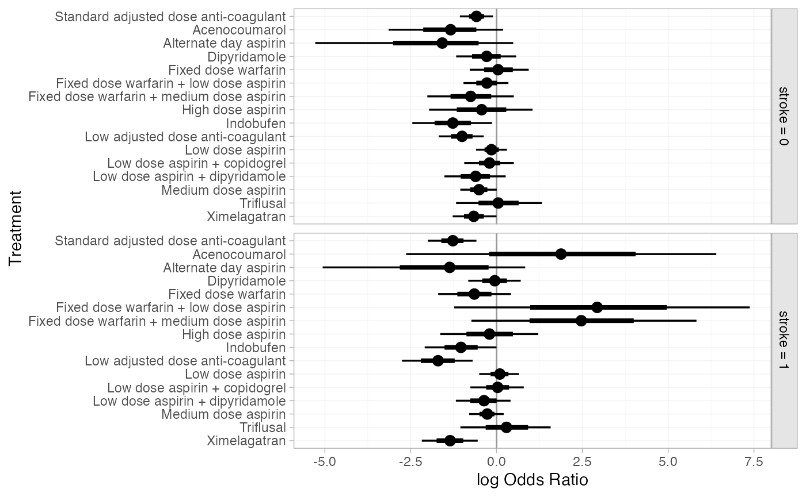
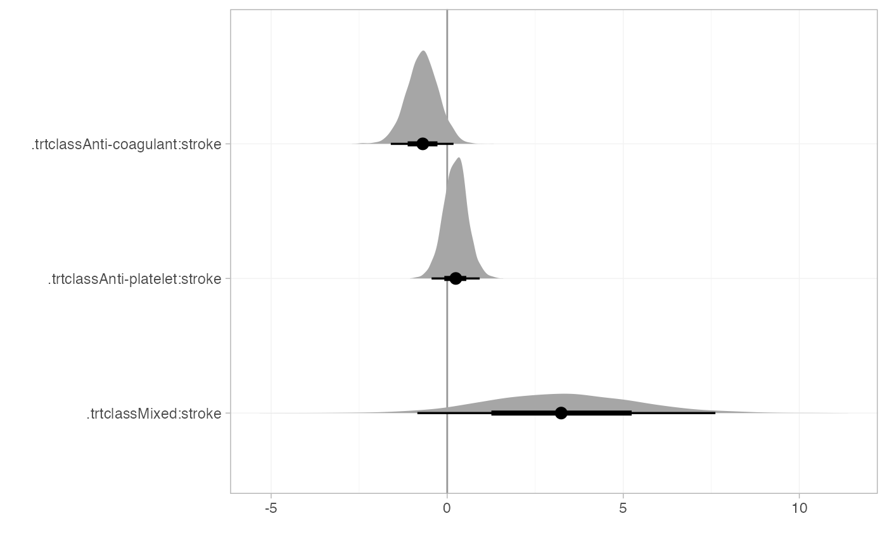
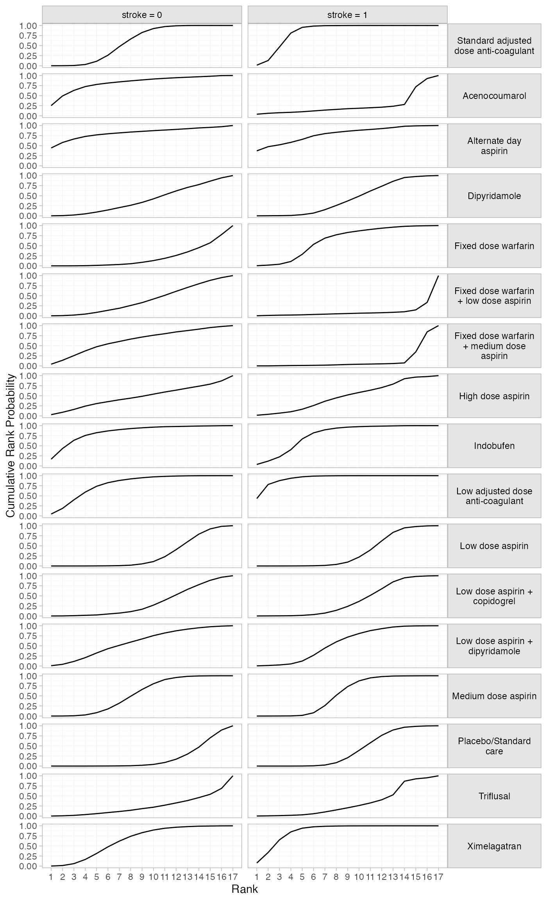
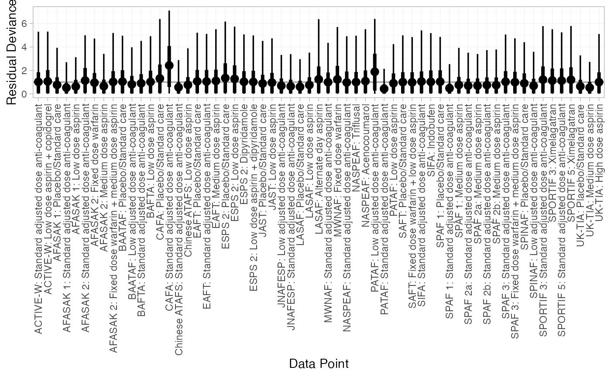

Example: Atrial fibrillation
Source:vignettes/example_atrial_fibrillation.Rmd
example_atrial_fibrillation.Rmd
library(multinma)
options(mc.cores = parallel::detectCores())#> For execution on a local, multicore CPU with excess RAM we recommend calling
#> options(mc.cores = parallel::detectCores())
#>
#> Attaching package: 'multinma'
#> The following objects are masked from 'package:stats':
#>
#> dgamma, pgamma, qgammaThis vignette describes the analysis of 26 trials comparing 17
treatments in 4 classes for the prevention of stroke in patients with
atrial fibrillation (Cooper et al. 2009). The data are
available in this package as atrial_fibrillation:
head(atrial_fibrillation)
#> studyc studyn trtc trtn trt_class r n E
#> 1 ACTIVE-W 1 Standard adjusted dose anti-coagulant 3 Anti-coagulant 65 3371 4200
#> 2 ACTIVE-W 1 Low dose aspirin + copidogrel 16 Anti-platelet 106 3335 4180
#> 3 AFASAK 1 2 Placebo/Standard care 1 Control 19 336 398
#> 4 AFASAK 1 2 Standard adjusted dose anti-coagulant 3 Anti-coagulant 9 335 413
#> 5 AFASAK 1 2 Low dose aspirin 5 Anti-platelet 16 336 409
#> 6 AFASAK 2 3 Standard adjusted dose anti-coagulant 3 Anti-coagulant 11 170 355
#> stroke year followup
#> 1 0.15 2006 1.3
#> 2 0.15 2006 1.3
#> 3 0.06 1989 1.2
#> 4 0.06 1989 1.2
#> 5 0.06 1989 1.2
#> 6 0.10 1998 2.2Cooper et al. (2009) used this data to demonstrate meta-regression models, which we recreate here.
Setting up the network
Whilst we have data on the patient-years at risk in each study
(E), we ignore this here to follow the analysis of Cooper et al. (2009), instead analysing the number of
patients with stroke (r) out of the total (n)
in each arm. We use the function set_agd_arm() to set up
the network, making sure to specify the treatment classes
trt_class. We remove the WASPO study from the network as
both arms had zero events, and this study therefore contributes no
information.
af_net <- set_agd_arm(atrial_fibrillation[atrial_fibrillation$studyc != "WASPO", ],
study = studyc,
trt = trtc,
r = r,
n = n,
trt_class = trt_class)
af_net
#> A network with 25 AgD studies (arm-based).
#>
#> ------------------------------------------------------- AgD studies (arm-based) ----
#> Study Treatment arms
#> ACTIVE-W 2: Standard adjusted dose anti-coagulant | Low dose aspirin + copidogrel
#> AFASAK 1 3: Standard adjusted dose anti-coagulant | Low dose aspirin | Placebo/Standa...
#> AFASAK 2 4: Standard adjusted dose anti-coagulant | Fixed dose warfarin | Fixed dose ...
#> BAATAF 2: Low adjusted dose anti-coagulant | Placebo/Standard care
#> BAFTA 2: Standard adjusted dose anti-coagulant | Low dose aspirin
#> CAFA 2: Standard adjusted dose anti-coagulant | Placebo/Standard care
#> Chinese ATAFS 2: Standard adjusted dose anti-coagulant | Low dose aspirin
#> EAFT 3: Standard adjusted dose anti-coagulant | Medium dose aspirin | Placebo/Sta...
#> ESPS 2 4: Dipyridamole | Low dose aspirin | Low dose aspirin + dipyridamole | Place...
#> JAST 2: Low dose aspirin | Placebo/Standard care
#> ... plus 15 more studies
#>
#> Outcome type: count
#> ------------------------------------------------------------------------------------
#> Total number of treatments: 17, in 4 classes
#> Total number of studies: 25
#> Reference treatment is: Standard adjusted dose anti-coagulant
#> Network is connected(A better analysis, accounting for differences in the patient-years
at risk between studies, can be performed by specifying a rate outcome
with r and E in set_agd_arm()
above. The following code remains identical.)
Plot the network with the plot() method:
plot(af_net, weight_nodes = TRUE, weight_edges = TRUE, show_trt_class = TRUE) +
ggplot2::theme(legend.position = "bottom", legend.box = "vertical")
Meta-analysis models
We fit two (random effects) models:
- A standard NMA model without any covariates (model 1 of Cooper et al. (2009));
- A meta-regression model adjusting for the proportion of individuals in each study with prior stroke, with shared interaction coefficients by treatment class (model 4b of Cooper et al. (2009)).
NMA with no covariates
We fit a random effects model using the nma() function
with trt_effects = "random". We use
prior distributions for the treatment effects
and study-specific intercepts
,
and a
prior for the heterogeneity standard deviation
.
We can examine the range of parameter values implied by these prior
distributions with the summary() method:
summary(normal(scale = 100))
#> A Normal prior distribution: location = 0, scale = 100.
#> 50% of the prior density lies between -67.45 and 67.45.
#> 95% of the prior density lies between -196 and 196.
summary(half_normal(scale = 5))
#> A half-Normal prior distribution: location = 0, scale = 5.
#> 50% of the prior density lies between 0 and 3.37.
#> 95% of the prior density lies between 0 and 9.8.Fitting the model with the nma() function. We increase
the target acceptance rate adapt_delta = 0.99 to minimise
divergent transition warnings.
af_fit_1 <- nma(af_net,
trt_effects = "random",
prior_intercept = normal(scale = 100),
prior_trt = normal(scale = 100),
prior_het = half_normal(scale = 5),
adapt_delta = 0.99)#> Note: Setting "Standard adjusted dose anti-coagulant" as the network reference treatment.Basic parameter summaries are given by the print()
method:
af_fit_1
#> A random effects NMA with a binomial likelihood (logit link).
#> Inference for Stan model: binomial_1par.
#> 4 chains, each with iter=2000; warmup=1000; thin=1;
#> post-warmup draws per chain=1000, total post-warmup draws=4000.
#>
#> mean se_mean sd 2.5% 25% 50%
#> d[Acenocoumarol] -0.76 0.01 0.83 -2.46 -1.30 -0.73
#> d[Alternate day aspirin] -1.02 0.02 1.41 -4.32 -1.77 -0.84
#> d[Dipyridamole] 0.60 0.01 0.43 -0.27 0.31 0.60
#> d[Fixed dose warfarin] 0.93 0.01 0.40 0.12 0.66 0.94
#> d[Fixed dose warfarin + low dose aspirin] 0.48 0.01 0.45 -0.43 0.20 0.49
#> d[Fixed dose warfarin + medium dose aspirin] 0.89 0.01 0.32 0.24 0.68 0.89
#> d[High dose aspirin] 0.52 0.01 0.76 -1.00 0.02 0.52
#> d[Indobufen] 0.25 0.01 0.45 -0.66 -0.05 0.25
#> d[Low adjusted dose anti-coagulant] -0.29 0.01 0.38 -1.07 -0.55 -0.27
#> d[Low dose aspirin] 0.62 0.00 0.22 0.18 0.48 0.62
#> d[Low dose aspirin + copidogrel] 0.51 0.01 0.35 -0.23 0.31 0.51
#> d[Low dose aspirin + dipyridamole] 0.27 0.01 0.48 -0.68 -0.04 0.28
#> d[Medium dose aspirin] 0.39 0.00 0.20 -0.01 0.26 0.39
#> d[Placebo/Standard care] 0.76 0.00 0.20 0.37 0.63 0.76
#> d[Triflusal] 0.66 0.01 0.63 -0.51 0.23 0.65
#> d[Ximelagatran] -0.08 0.00 0.26 -0.60 -0.24 -0.08
#> lp__ -4771.72 0.24 7.27 -4786.34 -4776.46 -4771.43
#> tau 0.29 0.00 0.13 0.04 0.19 0.28
#> 75% 97.5% n_eff Rhat
#> d[Acenocoumarol] -0.20 0.82 4248 1
#> d[Alternate day aspirin] -0.04 1.19 3805 1
#> d[Dipyridamole] 0.88 1.48 3151 1
#> d[Fixed dose warfarin] 1.20 1.73 3758 1
#> d[Fixed dose warfarin + low dose aspirin] 0.77 1.36 2680 1
#> d[Fixed dose warfarin + medium dose aspirin] 1.10 1.53 3988 1
#> d[High dose aspirin] 1.02 2.03 5605 1
#> d[Indobufen] 0.53 1.13 4481 1
#> d[Low adjusted dose anti-coagulant] -0.04 0.44 3606 1
#> d[Low dose aspirin] 0.76 1.04 2585 1
#> d[Low dose aspirin + copidogrel] 0.71 1.22 3944 1
#> d[Low dose aspirin + dipyridamole] 0.60 1.19 3472 1
#> d[Medium dose aspirin] 0.51 0.77 2720 1
#> d[Placebo/Standard care] 0.89 1.16 1760 1
#> d[Triflusal] 1.09 1.92 3801 1
#> d[Ximelagatran] 0.08 0.47 3739 1
#> lp__ -4766.62 -4758.17 927 1
#> tau 0.37 0.58 720 1
#>
#> Samples were drawn using NUTS(diag_e) at Mon Sep 16 14:10:27 2024.
#> For each parameter, n_eff is a crude measure of effective sample size,
#> and Rhat is the potential scale reduction factor on split chains (at
#> convergence, Rhat=1).By default, summaries of the study-specific intercepts
and study-specific relative effects
are hidden, but could be examined by changing the pars
argument:
The prior and posterior distributions can be compared visually using
the plot_prior_posterior() function:
plot_prior_posterior(af_fit_1, prior = c("trt", "het"))
We can compute relative effects against placebo/standard care with
the relative_effects() function with the
trt_ref argument:
(af_1_releff <- relative_effects(af_fit_1, trt_ref = "Placebo/Standard care"))
#> mean sd 2.5% 25% 50% 75% 97.5% Bulk_ESS
#> d[Standard adjusted dose anti-coagulant] -0.76 0.20 -1.16 -0.89 -0.76 -0.63 -0.37 1788
#> d[Acenocoumarol] -1.52 0.87 -3.30 -2.08 -1.49 -0.94 0.10 3926
#> d[Alternate day aspirin] -1.78 1.41 -5.07 -2.52 -1.60 -0.81 0.45 5177
#> d[Dipyridamole] -0.16 0.41 -0.97 -0.43 -0.17 0.10 0.65 4954
#> d[Fixed dose warfarin] 0.17 0.44 -0.71 -0.12 0.17 0.47 1.04 3646
#> d[Fixed dose warfarin + low dose aspirin] -0.28 0.41 -1.10 -0.53 -0.27 -0.02 0.52 4639
#> d[Fixed dose warfarin + medium dose aspirin] 0.13 0.37 -0.63 -0.11 0.14 0.38 0.85 3006
#> d[High dose aspirin] -0.24 0.75 -1.71 -0.73 -0.24 0.25 1.28 6910
#> d[Indobufen] -0.51 0.50 -1.53 -0.82 -0.51 -0.19 0.48 3476
#> d[Low adjusted dose anti-coagulant] -1.05 0.36 -1.77 -1.28 -1.04 -0.81 -0.36 6029
#> d[Low dose aspirin] -0.14 0.21 -0.55 -0.28 -0.14 0.00 0.28 5535
#> d[Low dose aspirin + copidogrel] -0.25 0.40 -1.09 -0.49 -0.24 0.00 0.57 3151
#> d[Low dose aspirin + dipyridamole] -0.48 0.45 -1.40 -0.78 -0.48 -0.18 0.36 5148
#> d[Medium dose aspirin] -0.37 0.23 -0.83 -0.52 -0.38 -0.23 0.07 3677
#> d[Triflusal] -0.10 0.67 -1.40 -0.54 -0.11 0.35 1.26 3441
#> d[Ximelagatran] -0.84 0.33 -1.47 -1.05 -0.84 -0.63 -0.18 2811
#> Tail_ESS Rhat
#> d[Standard adjusted dose anti-coagulant] 2331 1
#> d[Acenocoumarol] 2787 1
#> d[Alternate day aspirin] 2749 1
#> d[Dipyridamole] 2529 1
#> d[Fixed dose warfarin] 2999 1
#> d[Fixed dose warfarin + low dose aspirin] 3025 1
#> d[Fixed dose warfarin + medium dose aspirin] 2710 1
#> d[High dose aspirin] 3552 1
#> d[Indobufen] 3278 1
#> d[Low adjusted dose anti-coagulant] 3213 1
#> d[Low dose aspirin] 3386 1
#> d[Low dose aspirin + copidogrel] 2622 1
#> d[Low dose aspirin + dipyridamole] 3326 1
#> d[Medium dose aspirin] 3367 1
#> d[Triflusal] 2635 1
#> d[Ximelagatran] 2983 1These estimates can easily be plotted with the plot()
method:
plot(af_1_releff, ref_line = 0)We can also produce treatment rankings, rank probabilities, and cumulative rank probabilities.
(af_1_ranks <- posterior_ranks(af_fit_1))
#> mean sd 2.5% 25% 50% 75% 97.5% Bulk_ESS
#> rank[Standard adjusted dose anti-coagulant] 5.29 1.40 3.00 4 5 6 8 2826
#> rank[Acenocoumarol] 3.12 3.15 1.00 1 2 3 13 3536
#> rank[Alternate day aspirin] 3.74 4.32 1.00 1 2 5 17 5797
#> rank[Dipyridamole] 11.28 3.69 4.00 9 11 14 17 4235
#> rank[Fixed dose warfarin] 14.10 3.02 6.00 12 15 16 17 4320
#> rank[Fixed dose warfarin + low dose aspirin] 10.12 3.88 3.00 7 10 13 17 3877
#> rank[Fixed dose warfarin + medium dose aspirin] 14.02 2.74 7.00 12 15 16 17 2932
#> rank[High dose aspirin] 10.32 5.23 1.98 6 11 16 17 6152
#> rank[Indobufen] 8.02 3.99 2.00 5 8 11 16 3954
#> rank[Low adjusted dose anti-coagulant] 3.75 2.15 1.00 2 3 5 9 3925
#> rank[Low dose aspirin] 11.72 2.24 7.00 10 12 13 16 4489
#> rank[Low dose aspirin + copidogrel] 10.46 3.44 4.00 8 10 13 17 3756
#> rank[Low dose aspirin + dipyridamole] 8.26 3.97 2.00 5 8 11 16 4447
#> rank[Medium dose aspirin] 9.11 2.16 5.00 8 9 10 14 4408
#> rank[Placebo/Standard care] 13.38 1.83 10.00 12 14 15 17 3392
#> rank[Triflusal] 11.47 4.68 3.00 8 12 16 17 4017
#> rank[Ximelagatran] 4.84 2.26 2.00 3 4 6 10 3628
#> Tail_ESS Rhat
#> rank[Standard adjusted dose anti-coagulant] 3727 1
#> rank[Acenocoumarol] 2838 1
#> rank[Alternate day aspirin] 4044 1
#> rank[Dipyridamole] NA 1
#> rank[Fixed dose warfarin] NA 1
#> rank[Fixed dose warfarin + low dose aspirin] 3211 1
#> rank[Fixed dose warfarin + medium dose aspirin] NA 1
#> rank[High dose aspirin] NA 1
#> rank[Indobufen] 3210 1
#> rank[Low adjusted dose anti-coagulant] 3487 1
#> rank[Low dose aspirin] 3812 1
#> rank[Low dose aspirin + copidogrel] 3112 1
#> rank[Low dose aspirin + dipyridamole] 3490 1
#> rank[Medium dose aspirin] 3363 1
#> rank[Placebo/Standard care] 3334 1
#> rank[Triflusal] NA 1
#> rank[Ximelagatran] 3156 1
plot(af_1_ranks)
(af_1_rankprobs <- posterior_rank_probs(af_fit_1))
#> p_rank[1] p_rank[2] p_rank[3] p_rank[4] p_rank[5]
#> d[Standard adjusted dose anti-coagulant] 0.00 0.01 0.08 0.20 0.28
#> d[Acenocoumarol] 0.37 0.28 0.10 0.05 0.04
#> d[Alternate day aspirin] 0.47 0.17 0.07 0.04 0.03
#> d[Dipyridamole] 0.00 0.00 0.01 0.02 0.03
#> d[Fixed dose warfarin] 0.00 0.00 0.00 0.00 0.01
#> d[Fixed dose warfarin + low dose aspirin] 0.00 0.02 0.03 0.04 0.05
#> d[Fixed dose warfarin + medium dose aspirin] 0.00 0.00 0.00 0.00 0.00
#> d[High dose aspirin] 0.03 0.06 0.06 0.06 0.04
#> d[Indobufen] 0.01 0.05 0.07 0.07 0.08
#> d[Low adjusted dose anti-coagulant] 0.08 0.24 0.25 0.16 0.09
#> d[Low dose aspirin] 0.00 0.00 0.00 0.00 0.00
#> d[Low dose aspirin + copidogrel] 0.00 0.01 0.01 0.02 0.03
#> d[Low dose aspirin + dipyridamole] 0.01 0.04 0.08 0.07 0.08
#> d[Medium dose aspirin] 0.00 0.00 0.00 0.01 0.03
#> d[Placebo/Standard care] 0.00 0.00 0.00 0.00 0.00
#> d[Triflusal] 0.00 0.02 0.05 0.04 0.04
#> d[Ximelagatran] 0.02 0.09 0.19 0.22 0.17
#> p_rank[6] p_rank[7] p_rank[8] p_rank[9]
#> d[Standard adjusted dose anti-coagulant] 0.23 0.13 0.05 0.01
#> d[Acenocoumarol] 0.03 0.03 0.02 0.02
#> d[Alternate day aspirin] 0.03 0.03 0.02 0.02
#> d[Dipyridamole] 0.04 0.06 0.07 0.09
#> d[Fixed dose warfarin] 0.01 0.02 0.02 0.03
#> d[Fixed dose warfarin + low dose aspirin] 0.06 0.08 0.09 0.10
#> d[Fixed dose warfarin + medium dose aspirin] 0.01 0.01 0.02 0.04
#> d[High dose aspirin] 0.04 0.05 0.06 0.05
#> d[Indobufen] 0.11 0.10 0.09 0.08
#> d[Low adjusted dose anti-coagulant] 0.06 0.05 0.03 0.02
#> d[Low dose aspirin] 0.01 0.02 0.05 0.08
#> d[Low dose aspirin + copidogrel] 0.05 0.08 0.10 0.10
#> d[Low dose aspirin + dipyridamole] 0.09 0.09 0.09 0.08
#> d[Medium dose aspirin] 0.07 0.11 0.18 0.19
#> d[Placebo/Standard care] 0.00 0.00 0.01 0.02
#> d[Triflusal] 0.05 0.06 0.06 0.05
#> d[Ximelagatran] 0.12 0.08 0.05 0.03
#> p_rank[10] p_rank[11] p_rank[12] p_rank[13]
#> d[Standard adjusted dose anti-coagulant] 0.00 0.00 0.00 0.00
#> d[Acenocoumarol] 0.01 0.01 0.01 0.01
#> d[Alternate day aspirin] 0.01 0.01 0.01 0.02
#> d[Dipyridamole] 0.09 0.09 0.08 0.09
#> d[Fixed dose warfarin] 0.04 0.05 0.06 0.07
#> d[Fixed dose warfarin + low dose aspirin] 0.09 0.09 0.08 0.07
#> d[Fixed dose warfarin + medium dose aspirin] 0.05 0.06 0.07 0.08
#> d[High dose aspirin] 0.05 0.05 0.04 0.05
#> d[Indobufen] 0.07 0.06 0.04 0.04
#> d[Low adjusted dose anti-coagulant] 0.01 0.01 0.00 0.00
#> d[Low dose aspirin] 0.13 0.15 0.18 0.16
#> d[Low dose aspirin + copidogrel] 0.11 0.10 0.09 0.09
#> d[Low dose aspirin + dipyridamole] 0.07 0.06 0.06 0.05
#> d[Medium dose aspirin] 0.16 0.11 0.07 0.03
#> d[Placebo/Standard care] 0.04 0.09 0.14 0.19
#> d[Triflusal] 0.05 0.05 0.06 0.05
#> d[Ximelagatran] 0.02 0.01 0.01 0.00
#> p_rank[14] p_rank[15] p_rank[16] p_rank[17]
#> d[Standard adjusted dose anti-coagulant] 0.00 0.00 0.00 0.00
#> d[Acenocoumarol] 0.01 0.00 0.01 0.00
#> d[Alternate day aspirin] 0.01 0.01 0.02 0.03
#> d[Dipyridamole] 0.09 0.09 0.08 0.07
#> d[Fixed dose warfarin] 0.09 0.14 0.20 0.24
#> d[Fixed dose warfarin + low dose aspirin] 0.07 0.06 0.06 0.04
#> d[Fixed dose warfarin + medium dose aspirin] 0.11 0.16 0.22 0.17
#> d[High dose aspirin] 0.05 0.06 0.09 0.17
#> d[Indobufen] 0.04 0.03 0.03 0.02
#> d[Low adjusted dose anti-coagulant] 0.00 0.00 0.00 0.00
#> d[Low dose aspirin] 0.11 0.07 0.03 0.01
#> d[Low dose aspirin + copidogrel] 0.07 0.07 0.05 0.03
#> d[Low dose aspirin + dipyridamole] 0.04 0.04 0.03 0.02
#> d[Medium dose aspirin] 0.02 0.01 0.00 0.00
#> d[Placebo/Standard care] 0.22 0.18 0.09 0.03
#> d[Triflusal] 0.06 0.08 0.10 0.19
#> d[Ximelagatran] 0.00 0.00 0.00 0.00
plot(af_1_rankprobs)
(af_1_cumrankprobs <- posterior_rank_probs(af_fit_1, cumulative = TRUE))
#> p_rank[1] p_rank[2] p_rank[3] p_rank[4] p_rank[5]
#> d[Standard adjusted dose anti-coagulant] 0.00 0.01 0.09 0.29 0.58
#> d[Acenocoumarol] 0.37 0.65 0.75 0.80 0.84
#> d[Alternate day aspirin] 0.47 0.64 0.71 0.75 0.78
#> d[Dipyridamole] 0.00 0.01 0.02 0.04 0.07
#> d[Fixed dose warfarin] 0.00 0.00 0.00 0.01 0.01
#> d[Fixed dose warfarin + low dose aspirin] 0.00 0.02 0.05 0.09 0.13
#> d[Fixed dose warfarin + medium dose aspirin] 0.00 0.00 0.00 0.00 0.01
#> d[High dose aspirin] 0.03 0.08 0.14 0.20 0.24
#> d[Indobufen] 0.01 0.06 0.14 0.21 0.30
#> d[Low adjusted dose anti-coagulant] 0.08 0.32 0.57 0.73 0.82
#> d[Low dose aspirin] 0.00 0.00 0.00 0.00 0.00
#> d[Low dose aspirin + copidogrel] 0.00 0.01 0.02 0.05 0.08
#> d[Low dose aspirin + dipyridamole] 0.01 0.05 0.13 0.20 0.28
#> d[Medium dose aspirin] 0.00 0.00 0.00 0.01 0.04
#> d[Placebo/Standard care] 0.00 0.00 0.00 0.00 0.00
#> d[Triflusal] 0.00 0.02 0.07 0.10 0.14
#> d[Ximelagatran] 0.02 0.11 0.30 0.52 0.68
#> p_rank[6] p_rank[7] p_rank[8] p_rank[9]
#> d[Standard adjusted dose anti-coagulant] 0.81 0.94 0.99 1.00
#> d[Acenocoumarol] 0.87 0.90 0.92 0.94
#> d[Alternate day aspirin] 0.81 0.83 0.86 0.88
#> d[Dipyridamole] 0.11 0.17 0.24 0.33
#> d[Fixed dose warfarin] 0.03 0.04 0.07 0.10
#> d[Fixed dose warfarin + low dose aspirin] 0.19 0.26 0.35 0.45
#> d[Fixed dose warfarin + medium dose aspirin] 0.01 0.03 0.05 0.08
#> d[High dose aspirin] 0.28 0.33 0.39 0.44
#> d[Indobufen] 0.40 0.50 0.59 0.67
#> d[Low adjusted dose anti-coagulant] 0.89 0.93 0.96 0.98
#> d[Low dose aspirin] 0.01 0.03 0.08 0.16
#> d[Low dose aspirin + copidogrel] 0.12 0.20 0.30 0.40
#> d[Low dose aspirin + dipyridamole] 0.37 0.46 0.55 0.64
#> d[Medium dose aspirin] 0.11 0.22 0.40 0.59
#> d[Placebo/Standard care] 0.00 0.00 0.01 0.02
#> d[Triflusal] 0.19 0.24 0.31 0.36
#> d[Ximelagatran] 0.80 0.88 0.93 0.96
#> p_rank[10] p_rank[11] p_rank[12] p_rank[13]
#> d[Standard adjusted dose anti-coagulant] 1.00 1.00 1.00 1.00
#> d[Acenocoumarol] 0.95 0.96 0.97 0.98
#> d[Alternate day aspirin] 0.89 0.91 0.92 0.94
#> d[Dipyridamole] 0.42 0.50 0.59 0.67
#> d[Fixed dose warfarin] 0.14 0.19 0.25 0.32
#> d[Fixed dose warfarin + low dose aspirin] 0.54 0.62 0.70 0.77
#> d[Fixed dose warfarin + medium dose aspirin] 0.13 0.19 0.25 0.33
#> d[High dose aspirin] 0.50 0.55 0.59 0.63
#> d[Indobufen] 0.73 0.79 0.84 0.88
#> d[Low adjusted dose anti-coagulant] 0.99 1.00 1.00 1.00
#> d[Low dose aspirin] 0.29 0.44 0.62 0.78
#> d[Low dose aspirin + copidogrel] 0.51 0.61 0.70 0.78
#> d[Low dose aspirin + dipyridamole] 0.71 0.77 0.83 0.88
#> d[Medium dose aspirin] 0.75 0.87 0.94 0.97
#> d[Placebo/Standard care] 0.07 0.16 0.30 0.49
#> d[Triflusal] 0.41 0.46 0.52 0.57
#> d[Ximelagatran] 0.98 0.99 0.99 1.00
#> p_rank[14] p_rank[15] p_rank[16] p_rank[17]
#> d[Standard adjusted dose anti-coagulant] 1.00 1.00 1.00 1
#> d[Acenocoumarol] 0.98 0.99 1.00 1
#> d[Alternate day aspirin] 0.95 0.96 0.97 1
#> d[Dipyridamole] 0.76 0.85 0.93 1
#> d[Fixed dose warfarin] 0.42 0.56 0.76 1
#> d[Fixed dose warfarin + low dose aspirin] 0.84 0.90 0.96 1
#> d[Fixed dose warfarin + medium dose aspirin] 0.45 0.61 0.83 1
#> d[High dose aspirin] 0.69 0.75 0.83 1
#> d[Indobufen] 0.92 0.95 0.98 1
#> d[Low adjusted dose anti-coagulant] 1.00 1.00 1.00 1
#> d[Low dose aspirin] 0.89 0.96 0.99 1
#> d[Low dose aspirin + copidogrel] 0.86 0.92 0.97 1
#> d[Low dose aspirin + dipyridamole] 0.92 0.96 0.98 1
#> d[Medium dose aspirin] 0.99 1.00 1.00 1
#> d[Placebo/Standard care] 0.71 0.89 0.97 1
#> d[Triflusal] 0.63 0.70 0.81 1
#> d[Ximelagatran] 1.00 1.00 1.00 1
plot(af_1_cumrankprobs)
Network meta-regression adjusting for proportion of prior stroke
We now consider a meta-regression model adjusting for the proportion
of individuals in each study with prior stroke, with shared interaction
coefficients by treatment class. The regression model is specified in
the nma() function using a formula in the
regression argument. The formula ~ .trt:stroke
means that interactions of prior stroke with treatment will be included;
the .trt special variable indicates treatment, and
stroke is in the original data set. We specify
class_interactions = "common" to denote that the
interaction parameters are to be common (i.e. shared) between treatments
within each class. (Setting
class_interactions = "independent" would fit model 2 of
Cooper et al. (2009) with separate interactions for
each treatment, data permitting.) We use the same prior distributions as
above, but additionally require a prior distribution for the regression
coefficients prior_reg; we use a
prior distribution. The QR
decomposition can greatly improve the efficiency of sampling for
regression models by decorrelating the sampling space; we specify that
this should be used with QR = TRUE, and increase the target
acceptance rate adapt_delta = 0.99 to minimise divergent
transition warnings.
af_fit_4b <- nma(af_net,
trt_effects = "random",
regression = ~ .trt:stroke,
class_interactions = "common",
QR = TRUE,
prior_intercept = normal(scale = 100),
prior_trt = normal(scale = 100),
prior_reg = normal(scale = 100),
prior_het = half_normal(scale = 5),
adapt_delta = 0.99)#> Note: Setting "Standard adjusted dose anti-coagulant" as the network reference treatment.
#> Warning: Bulk Effective Samples Size (ESS) is too low, indicating posterior means and medians may be unreliable.
#> Running the chains for more iterations may help. See
#> https://mc-stan.org/misc/warnings.html#bulk-essBasic parameter summaries are given by the print()
method:
af_fit_4b
#> A random effects NMA with a binomial likelihood (logit link).
#> Regression model: ~.trt:stroke.
#> Centred covariates at the following overall mean values:
#> stroke
#> 0.2957377
#> Inference for Stan model: binomial_1par.
#> 4 chains, each with iter=2000; warmup=1000; thin=1;
#> post-warmup draws per chain=1000, total post-warmup draws=4000.
#>
#> mean se_mean sd 2.5% 25% 50%
#> beta[.trtclassControl:stroke] 0.70 0.01 0.45 -0.18 0.40 0.69
#> beta[.trtclassAnti-platelet:stroke] 0.94 0.01 0.43 0.11 0.67 0.93
#> beta[.trtclassMixed:stroke] 3.96 0.03 2.12 -0.14 2.53 3.93
#> d[Acenocoumarol] 0.38 0.02 1.02 -1.67 -0.27 0.41
#> d[Alternate day aspirin] -0.93 0.03 1.46 -4.45 -1.71 -0.74
#> d[Dipyridamole] 0.57 0.01 0.41 -0.26 0.31 0.57
#> d[Fixed dose warfarin] 0.64 0.01 0.38 -0.12 0.38 0.63
#> d[Fixed dose warfarin + low dose aspirin] 1.47 0.01 0.74 0.02 1.00 1.46
#> d[Fixed dose warfarin + medium dose aspirin] 1.00 0.00 0.30 0.42 0.81 1.00
#> d[High dose aspirin] 0.42 0.01 0.74 -1.06 -0.06 0.43
#> d[Indobufen] -0.42 0.01 0.49 -1.40 -0.73 -0.41
#> d[Low adjusted dose anti-coagulant] -0.43 0.01 0.37 -1.17 -0.68 -0.42
#> d[Low dose aspirin] 0.71 0.00 0.20 0.30 0.59 0.72
#> d[Low dose aspirin + copidogrel] 0.65 0.01 0.30 0.06 0.48 0.66
#> d[Low dose aspirin + dipyridamole] 0.25 0.01 0.42 -0.60 -0.04 0.25
#> d[Medium dose aspirin] 0.35 0.00 0.17 0.00 0.23 0.35
#> d[Placebo/Standard care] 0.79 0.00 0.19 0.43 0.67 0.79
#> d[Triflusal] 0.92 0.01 0.60 -0.28 0.53 0.91
#> d[Ximelagatran] -0.08 0.00 0.22 -0.51 -0.21 -0.08
#> lp__ -4771.33 0.21 7.21 -4785.67 -4776.02 -4771.02
#> tau 0.19 0.01 0.13 0.01 0.08 0.17
#> 75% 97.5% n_eff Rhat
#> beta[.trtclassControl:stroke] 0.99 1.60 4544 1.00
#> beta[.trtclassAnti-platelet:stroke] 1.21 1.79 4066 1.00
#> beta[.trtclassMixed:stroke] 5.38 8.24 4887 1.00
#> d[Acenocoumarol] 1.08 2.36 3927 1.00
#> d[Alternate day aspirin] 0.06 1.38 1921 1.00
#> d[Dipyridamole] 0.84 1.36 5132 1.00
#> d[Fixed dose warfarin] 0.89 1.42 4316 1.00
#> d[Fixed dose warfarin + low dose aspirin] 1.94 2.94 5436 1.00
#> d[Fixed dose warfarin + medium dose aspirin] 1.19 1.60 5160 1.00
#> d[High dose aspirin] 0.93 1.82 5967 1.00
#> d[Indobufen] -0.09 0.55 4083 1.00
#> d[Low adjusted dose anti-coagulant] -0.18 0.29 4316 1.00
#> d[Low dose aspirin] 0.84 1.11 4992 1.00
#> d[Low dose aspirin + copidogrel] 0.83 1.23 3037 1.00
#> d[Low dose aspirin + dipyridamole] 0.53 1.06 5102 1.00
#> d[Medium dose aspirin] 0.46 0.69 4904 1.00
#> d[Placebo/Standard care] 0.91 1.16 5042 1.00
#> d[Triflusal] 1.31 2.10 4716 1.00
#> d[Ximelagatran] 0.05 0.38 2878 1.00
#> lp__ -4766.36 -4758.07 1138 1.00
#> tau 0.26 0.50 330 1.02
#>
#> Samples were drawn using NUTS(diag_e) at Mon Sep 16 14:10:37 2024.
#> For each parameter, n_eff is a crude measure of effective sample size,
#> and Rhat is the potential scale reduction factor on split chains (at
#> convergence, Rhat=1).The estimated treatment effects d[] shown here
correspond to relative effects at the reference level of the covariate,
here proportion of prior stroke centered at the network mean value
0.296.
By default, summaries of the study-specific intercepts
and study-specific relative effects
are hidden, but could be examined by changing the pars
argument:
The prior and posterior distributions can be compared visually using
the plot_prior_posterior() function:
plot_prior_posterior(af_fit_4b, prior = c("reg", "het"))
We can compute relative effects against placebo/standard care with
the relative_effects() function with the
trt_ref argument, which by default produces relative
effects for the observed proportions of prior stroke in each study:
# Not run
(af_4b_releff <- relative_effects(af_fit_4b, trt_ref = "Placebo/Standard care"))
plot(af_4b_releff, ref_line = 0)We can produce estimated treatment effects for particular covariate
values using the newdata argument. For example, treatment
effects when no individuals or all individuals have prior stroke are
produced by
(af_4b_releff_01 <- relative_effects(af_fit_4b,
trt_ref = "Placebo/Standard care",
newdata = data.frame(stroke = c(0, 1),
label = c("stroke = 0", "stroke = 1")),
study = label))
#> ------------------------------------------------------------- Study: stroke = 0 ----
#>
#> Covariate values:
#> stroke
#> 0
#>
#> mean sd 2.5% 25% 50% 75%
#> d[stroke = 0: Standard adjusted dose anti-coagulant] -0.58 0.24 -1.07 -0.74 -0.58 -0.42
#> d[stroke = 0: Acenocoumarol] -1.37 0.84 -3.14 -1.90 -1.34 -0.83
#> d[stroke = 0: Alternate day aspirin] -1.79 1.44 -5.28 -2.55 -1.58 -0.82
#> d[stroke = 0: Dipyridamole] -0.29 0.45 -1.18 -0.59 -0.29 0.00
#> d[stroke = 0: Fixed dose warfarin] 0.05 0.44 -0.78 -0.24 0.04 0.35
#> d[stroke = 0: Fixed dose warfarin + low dose aspirin] -0.29 0.34 -0.96 -0.50 -0.28 -0.07
#> d[stroke = 0: Fixed dose warfarin + medium dose aspirin] -0.75 0.64 -2.02 -1.17 -0.75 -0.33
#> d[stroke = 0: High dose aspirin] -0.44 0.78 -1.96 -0.94 -0.43 0.07
#> d[stroke = 0: Indobufen] -1.28 0.58 -2.45 -1.63 -1.27 -0.91
#> d[stroke = 0: Low adjusted dose anti-coagulant] -1.01 0.33 -1.68 -1.23 -1.00 -0.78
#> d[stroke = 0: Low dose aspirin] -0.15 0.23 -0.60 -0.29 -0.15 0.00
#> d[stroke = 0: Low dose aspirin + copidogrel] -0.21 0.36 -0.94 -0.42 -0.20 0.01
#> d[stroke = 0: Low dose aspirin + dipyridamole] -0.61 0.46 -1.52 -0.92 -0.61 -0.31
#> d[stroke = 0: Medium dose aspirin] -0.51 0.27 -1.05 -0.69 -0.51 -0.34
#> d[stroke = 0: Triflusal] 0.06 0.63 -1.18 -0.35 0.05 0.47
#> d[stroke = 0: Ximelagatran] -0.66 0.32 -1.28 -0.86 -0.66 -0.46
#> 97.5% Bulk_ESS Tail_ESS Rhat
#> d[stroke = 0: Standard adjusted dose anti-coagulant] -0.10 4961 2951 1
#> d[stroke = 0: Acenocoumarol] 0.19 4136 2471 1
#> d[stroke = 0: Alternate day aspirin] 0.49 2761 1489 1
#> d[stroke = 0: Dipyridamole] 0.57 5029 2923 1
#> d[stroke = 0: Fixed dose warfarin] 0.94 5014 3242 1
#> d[stroke = 0: Fixed dose warfarin + low dose aspirin] 0.35 5277 2501 1
#> d[stroke = 0: Fixed dose warfarin + medium dose aspirin] 0.50 4419 2761 1
#> d[stroke = 0: High dose aspirin] 1.05 5582 3104 1
#> d[stroke = 0: Indobufen] -0.13 4243 2945 1
#> d[stroke = 0: Low adjusted dose anti-coagulant] -0.37 4771 2960 1
#> d[stroke = 0: Low dose aspirin] 0.30 4967 2971 1
#> d[stroke = 0: Low dose aspirin + copidogrel] 0.50 3991 1975 1
#> d[stroke = 0: Low dose aspirin + dipyridamole] 0.27 5123 2683 1
#> d[stroke = 0: Medium dose aspirin] 0.01 4909 2949 1
#> d[stroke = 0: Triflusal] 1.32 5343 2752 1
#> d[stroke = 0: Ximelagatran] 0.00 3474 2568 1
#>
#> ------------------------------------------------------------- Study: stroke = 1 ----
#>
#> Covariate values:
#> stroke
#> 1
#>
#> mean sd 2.5% 25% 50% 75%
#> d[stroke = 1: Standard adjusted dose anti-coagulant] -1.28 0.36 -2.00 -1.52 -1.27 -1.05
#> d[stroke = 1: Acenocoumarol] 1.89 2.30 -2.63 0.33 1.88 3.39
#> d[stroke = 1: Alternate day aspirin] -1.56 1.49 -5.06 -2.36 -1.36 -0.54
#> d[stroke = 1: Dipyridamole] -0.06 0.38 -0.82 -0.31 -0.05 0.20
#> d[stroke = 1: Fixed dose warfarin] -0.65 0.53 -1.70 -1.01 -0.65 -0.31
#> d[stroke = 1: Fixed dose warfarin + low dose aspirin] 2.97 2.17 -1.23 1.54 2.93 4.37
#> d[stroke = 1: Fixed dose warfarin + medium dose aspirin] 2.51 1.64 -0.73 1.41 2.47 3.57
#> d[stroke = 1: High dose aspirin] -0.20 0.72 -1.64 -0.66 -0.21 0.28
#> d[stroke = 1: Indobufen] -1.04 0.53 -2.09 -1.38 -1.04 -0.69
#> d[stroke = 1: Low adjusted dose anti-coagulant] -1.71 0.52 -2.76 -2.07 -1.70 -1.36
#> d[stroke = 1: Low dose aspirin] 0.09 0.29 -0.50 -0.09 0.10 0.28
#> d[stroke = 1: Low dose aspirin + copidogrel] 0.03 0.39 -0.76 -0.20 0.03 0.27
#> d[stroke = 1: Low dose aspirin + dipyridamole] -0.38 0.41 -1.18 -0.65 -0.36 -0.10
#> d[stroke = 1: Medium dose aspirin] -0.28 0.25 -0.80 -0.42 -0.27 -0.12
#> d[stroke = 1: Triflusal] 0.30 0.66 -1.05 -0.12 0.29 0.73
#> d[stroke = 1: Ximelagatran] -1.36 0.42 -2.18 -1.62 -1.35 -1.09
#> 97.5% Bulk_ESS Tail_ESS Rhat
#> d[stroke = 1: Standard adjusted dose anti-coagulant] -0.59 4678 2880 1.00
#> d[stroke = 1: Acenocoumarol] 6.40 4773 2853 1.00
#> d[stroke = 1: Alternate day aspirin] 0.84 2796 1507 1.00
#> d[stroke = 1: Dipyridamole] 0.70 5281 2735 1.00
#> d[stroke = 1: Fixed dose warfarin] 0.42 3967 3029 1.00
#> d[stroke = 1: Fixed dose warfarin + low dose aspirin] 7.38 5166 2866 1.00
#> d[stroke = 1: Fixed dose warfarin + medium dose aspirin] 5.82 5201 3085 1.00
#> d[stroke = 1: High dose aspirin] 1.22 5824 3250 1.00
#> d[stroke = 1: Indobufen] 0.00 4470 2866 1.00
#> d[stroke = 1: Low adjusted dose anti-coagulant] -0.70 4333 2847 1.00
#> d[stroke = 1: Low dose aspirin] 0.65 4829 2338 1.00
#> d[stroke = 1: Low dose aspirin + copidogrel] 0.79 3764 2440 1.00
#> d[stroke = 1: Low dose aspirin + dipyridamole] 0.41 5452 3293 1.00
#> d[stroke = 1: Medium dose aspirin] 0.21 4399 2268 1.01
#> d[stroke = 1: Triflusal] 1.58 4603 2921 1.00
#> d[stroke = 1: Ximelagatran] -0.55 4235 2734 1.00
plot(af_4b_releff_01, ref_line = 0)
The estimated class interactions (against the reference “Mixed” class) are very uncertain.
plot(af_fit_4b, pars = "beta", stat = "halfeye", ref_line = 0)
The interactions are more straightforward to interpret if we transform the interaction coefficients (using the consistency equations) so that they are against the control class:
af_4b_beta <- as.array(af_fit_4b, pars = "beta")
# Subtract beta[Control:stroke] from the other class interactions
af_4b_beta[ , , 2:3] <- sweep(af_4b_beta[ , , 2:3], 1:2,
af_4b_beta[ , , "beta[.trtclassControl:stroke]"], FUN = "-")
# Set beta[Anti-coagulant:stroke] = -beta[Control:stroke]
af_4b_beta[ , , "beta[.trtclassControl:stroke]"] <- -af_4b_beta[ , , "beta[.trtclassControl:stroke]"]
names(af_4b_beta)[1] <- "beta[.trtclassAnti-coagulant:stroke]"
# Summarise
summary(af_4b_beta)
#> mean sd 2.5% 25% 50% 75% 97.5% Bulk_ESS
#> beta[.trtclassAnti-coagulant:stroke] -0.70 0.45 -1.60 -0.99 -0.69 -0.40 0.18 4527
#> beta[.trtclassAnti-platelet:stroke] 0.24 0.34 -0.44 0.02 0.24 0.46 0.92 4498
#> beta[.trtclassMixed:stroke] 3.26 2.14 -0.85 1.81 3.24 4.67 7.62 4973
#> Tail_ESS Rhat
#> beta[.trtclassAnti-coagulant:stroke] 2957 1.01
#> beta[.trtclassAnti-platelet:stroke] 2766 1.00
#> beta[.trtclassMixed:stroke] 2927 1.00
plot(summary(af_4b_beta), stat = "halfeye", ref_line = 0)
There is some evidence that the effect of anti-coagulants increases (compared to control) with prior stroke. There is little evidence the effect of anti-platelets reduces with prior stroke, although the point estimate represents a substantial reduction in effectiveness, and the 95% Credible Interval includes values that correspond to substantial increases in treatment effect. The interaction effect of stroke on mixed treatments is very uncertain, but potentially indicates a substantial reduction in treatment effects with prior stroke.
We can also produce treatment rankings, rank probabilities, and
cumulative rank probabilities. By default (without the
newdata argument specified), these are produced at the
value of stroke for each study in the network in turn. To
instead produce rankings for when no individuals or all individuals have
prior stroke, we specify the newdata argument.
(af_4b_ranks <- posterior_ranks(af_fit_4b,
newdata = data.frame(stroke = c(0, 1),
label = c("stroke = 0", "stroke = 1")),
study = label))
#> ------------------------------------------------------------- Study: stroke = 0 ----
#>
#> Covariate values:
#> stroke
#> 0
#>
#> mean sd 2.5% 25% 50% 75% 97.5%
#> rank[stroke = 0: Standard adjusted dose anti-coagulant] 7.74 1.89 4 6 8 9 12
#> rank[stroke = 0: Acenocoumarol] 4.02 3.72 1 1 3 5 15
#> rank[stroke = 0: Alternate day aspirin] 4.06 4.52 1 1 2 5 17
#> rank[stroke = 0: Dipyridamole] 11.04 3.75 4 8 11 14 17
#> rank[stroke = 0: Fixed dose warfarin] 14.07 2.89 7 12 15 16 17
#> rank[stroke = 0: Fixed dose warfarin + low dose aspirin] 11.06 3.66 4 8 11 14 17
#> rank[stroke = 0: Fixed dose warfarin + medium dose aspirin] 7.06 4.42 1 3 6 10 16
#> rank[stroke = 0: High dose aspirin] 9.63 5.25 1 5 10 15 17
#> rank[stroke = 0: Indobufen] 3.65 2.81 1 2 3 4 12
#> rank[stroke = 0: Low adjusted dose anti-coagulant] 4.52 2.46 1 3 4 6 11
#> rank[stroke = 0: Low dose aspirin] 12.88 1.97 9 12 13 14 16
#> rank[stroke = 0: Low dose aspirin + copidogrel] 12.08 2.92 5 10 12 14 17
#> rank[stroke = 0: Low dose aspirin + dipyridamole] 7.82 3.68 2 5 7 10 16
#> rank[stroke = 0: Medium dose aspirin] 8.59 2.23 4 7 9 10 13
#> rank[stroke = 0: Placebo/Standard care] 14.31 1.94 10 13 15 16 17
#> rank[stroke = 0: Triflusal] 13.46 3.97 4 11 15 17 17
#> rank[stroke = 0: Ximelagatran] 7.01 2.64 3 5 7 9 13
#> Bulk_ESS Tail_ESS Rhat
#> rank[stroke = 0: Standard adjusted dose anti-coagulant] 3854 2898 1
#> rank[stroke = 0: Acenocoumarol] 4346 3030 1
#> rank[stroke = 0: Alternate day aspirin] 4678 3002 1
#> rank[stroke = 0: Dipyridamole] 4871 NA 1
#> rank[stroke = 0: Fixed dose warfarin] 4637 NA 1
#> rank[stroke = 0: Fixed dose warfarin + low dose aspirin] 5615 NA 1
#> rank[stroke = 0: Fixed dose warfarin + medium dose aspirin] 4750 3276 1
#> rank[stroke = 0: High dose aspirin] 5114 NA 1
#> rank[stroke = 0: Indobufen] 3557 3054 1
#> rank[stroke = 0: Low adjusted dose anti-coagulant] 3977 3293 1
#> rank[stroke = 0: Low dose aspirin] 3921 3059 1
#> rank[stroke = 0: Low dose aspirin + copidogrel] 3618 2192 1
#> rank[stroke = 0: Low dose aspirin + dipyridamole] 4833 2269 1
#> rank[stroke = 0: Medium dose aspirin] 4854 3400 1
#> rank[stroke = 0: Placebo/Standard care] 3626 NA 1
#> rank[stroke = 0: Triflusal] 4230 NA 1
#> rank[stroke = 0: Ximelagatran] 3215 2498 1
#>
#> ------------------------------------------------------------- Study: stroke = 1 ----
#>
#> Covariate values:
#> stroke
#> 1
#>
#> mean sd 2.5% 25% 50% 75% 97.5%
#> rank[stroke = 1: Standard adjusted dose anti-coagulant] 3.65 1.14 2 3 4 4 6
#> rank[stroke = 1: Acenocoumarol] 13.28 4.35 1 14 15 16 17
#> rank[stroke = 1: Alternate day aspirin] 4.53 4.08 1 1 3 7 14
#> rank[stroke = 1: Dipyridamole] 10.49 2.72 5 8 11 13 15
#> rank[stroke = 1: Fixed dose warfarin] 7.09 2.80 3 5 6 8 14
#> rank[stroke = 1: Fixed dose warfarin + low dose aspirin] 15.85 2.86 5 16 17 17 17
#> rank[stroke = 1: Fixed dose warfarin + medium dose aspirin] 15.42 1.96 8 15 16 16 17
#> rank[stroke = 1: High dose aspirin] 9.44 3.93 2 6 9 13 16
#> rank[stroke = 1: Indobufen] 4.98 2.21 1 4 5 6 10
#> rank[stroke = 1: Low adjusted dose anti-coagulant] 2.02 1.33 1 1 2 2 6
#> rank[stroke = 1: Low dose aspirin] 11.85 1.83 8 11 12 13 15
#> rank[stroke = 1: Low dose aspirin + copidogrel] 11.17 2.40 6 10 11 13 15
#> rank[stroke = 1: Low dose aspirin + dipyridamole] 8.19 2.63 3 6 8 10 14
#> rank[stroke = 1: Medium dose aspirin] 8.60 1.70 6 7 8 10 12
#> rank[stroke = 1: Placebo/Standard care] 11.11 1.93 7 10 11 12 15
#> rank[stroke = 1: Triflusal] 12.15 3.07 5 10 13 14 17
#> rank[stroke = 1: Ximelagatran] 3.19 1.42 1 2 3 4 6
#> Bulk_ESS Tail_ESS Rhat
#> rank[stroke = 1: Standard adjusted dose anti-coagulant] 3430 3123 1
#> rank[stroke = 1: Acenocoumarol] 4356 NA 1
#> rank[stroke = 1: Alternate day aspirin] 4322 2597 1
#> rank[stroke = 1: Dipyridamole] 4788 3203 1
#> rank[stroke = 1: Fixed dose warfarin] 3731 3121 1
#> rank[stroke = 1: Fixed dose warfarin + low dose aspirin] 3190 NA 1
#> rank[stroke = 1: Fixed dose warfarin + medium dose aspirin] 3130 NA 1
#> rank[stroke = 1: High dose aspirin] 4899 3215 1
#> rank[stroke = 1: Indobufen] 4053 3112 1
#> rank[stroke = 1: Low adjusted dose anti-coagulant] 3010 2911 1
#> rank[stroke = 1: Low dose aspirin] 4122 3328 1
#> rank[stroke = 1: Low dose aspirin + copidogrel] 3662 2420 1
#> rank[stroke = 1: Low dose aspirin + dipyridamole] 4464 2955 1
#> rank[stroke = 1: Medium dose aspirin] 4235 3679 1
#> rank[stroke = 1: Placebo/Standard care] 4379 3372 1
#> rank[stroke = 1: Triflusal] 4014 3015 1
#> rank[stroke = 1: Ximelagatran] 2616 2661 1
plot(af_4b_ranks)
(af_4b_rankprobs <- posterior_rank_probs(af_fit_4b,
newdata = data.frame(stroke = c(0, 1),
label = c("stroke = 0", "stroke = 1")),
study = label))
#> ------------------------------------------------------------- Study: stroke = 0 ----
#>
#> Covariate values:
#> stroke
#> 0
#>
#> p_rank[1] p_rank[2] p_rank[3]
#> d[stroke = 0: Standard adjusted dose anti-coagulant] 0.00 0.00 0.00
#> d[stroke = 0: Acenocoumarol] 0.25 0.24 0.14
#> d[stroke = 0: Alternate day aspirin] 0.44 0.14 0.09
#> d[stroke = 0: Dipyridamole] 0.00 0.00 0.02
#> d[stroke = 0: Fixed dose warfarin] 0.00 0.00 0.00
#> d[stroke = 0: Fixed dose warfarin + low dose aspirin] 0.00 0.00 0.01
#> d[stroke = 0: Fixed dose warfarin + medium dose aspirin] 0.04 0.10 0.12
#> d[stroke = 0: High dose aspirin] 0.03 0.06 0.07
#> d[stroke = 0: Indobufen] 0.17 0.26 0.20
#> d[stroke = 0: Low adjusted dose anti-coagulant] 0.05 0.14 0.21
#> d[stroke = 0: Low dose aspirin] 0.00 0.00 0.00
#> d[stroke = 0: Low dose aspirin + copidogrel] 0.00 0.00 0.01
#> d[stroke = 0: Low dose aspirin + dipyridamole] 0.01 0.03 0.07
#> d[stroke = 0: Medium dose aspirin] 0.00 0.00 0.01
#> d[stroke = 0: Placebo/Standard care] 0.00 0.00 0.00
#> d[stroke = 0: Triflusal] 0.00 0.01 0.01
#> d[stroke = 0: Ximelagatran] 0.00 0.01 0.05
#> p_rank[4] p_rank[5] p_rank[6]
#> d[stroke = 0: Standard adjusted dose anti-coagulant] 0.03 0.08 0.15
#> d[stroke = 0: Acenocoumarol] 0.10 0.05 0.03
#> d[stroke = 0: Alternate day aspirin] 0.06 0.04 0.03
#> d[stroke = 0: Dipyridamole] 0.03 0.04 0.05
#> d[stroke = 0: Fixed dose warfarin] 0.00 0.01 0.01
#> d[stroke = 0: Fixed dose warfarin + low dose aspirin] 0.02 0.04 0.05
#> d[stroke = 0: Fixed dose warfarin + medium dose aspirin] 0.12 0.10 0.07
#> d[stroke = 0: High dose aspirin] 0.08 0.06 0.05
#> d[stroke = 0: Indobufen] 0.12 0.07 0.04
#> d[stroke = 0: Low adjusted dose anti-coagulant] 0.19 0.14 0.09
#> d[stroke = 0: Low dose aspirin] 0.00 0.00 0.00
#> d[stroke = 0: Low dose aspirin + copidogrel] 0.01 0.01 0.02
#> d[stroke = 0: Low dose aspirin + dipyridamole] 0.09 0.12 0.11
#> d[stroke = 0: Medium dose aspirin] 0.02 0.06 0.09
#> d[stroke = 0: Placebo/Standard care] 0.00 0.00 0.00
#> d[stroke = 0: Triflusal] 0.02 0.02 0.03
#> d[stroke = 0: Ximelagatran] 0.10 0.15 0.16
#> p_rank[7] p_rank[8] p_rank[9]
#> d[stroke = 0: Standard adjusted dose anti-coagulant] 0.21 0.19 0.16
#> d[stroke = 0: Acenocoumarol] 0.03 0.03 0.02
#> d[stroke = 0: Alternate day aspirin] 0.02 0.02 0.02
#> d[stroke = 0: Dipyridamole] 0.06 0.06 0.07
#> d[stroke = 0: Fixed dose warfarin] 0.01 0.02 0.03
#> d[stroke = 0: Fixed dose warfarin + low dose aspirin] 0.05 0.07 0.07
#> d[stroke = 0: Fixed dose warfarin + medium dose aspirin] 0.06 0.06 0.05
#> d[stroke = 0: High dose aspirin] 0.05 0.04 0.05
#> d[stroke = 0: Indobufen] 0.03 0.03 0.02
#> d[stroke = 0: Low adjusted dose anti-coagulant] 0.05 0.04 0.03
#> d[stroke = 0: Low dose aspirin] 0.00 0.01 0.03
#> d[stroke = 0: Low dose aspirin + copidogrel] 0.02 0.04 0.06
#> d[stroke = 0: Low dose aspirin + dipyridamole] 0.08 0.08 0.08
#> d[stroke = 0: Medium dose aspirin] 0.14 0.17 0.17
#> d[stroke = 0: Placebo/Standard care] 0.00 0.00 0.01
#> d[stroke = 0: Triflusal] 0.03 0.03 0.04
#> d[stroke = 0: Ximelagatran] 0.14 0.12 0.09
#> p_rank[10] p_rank[11] p_rank[12]
#> d[stroke = 0: Standard adjusted dose anti-coagulant] 0.10 0.05 0.02
#> d[stroke = 0: Acenocoumarol] 0.02 0.02 0.01
#> d[stroke = 0: Alternate day aspirin] 0.02 0.02 0.02
#> d[stroke = 0: Dipyridamole] 0.09 0.10 0.10
#> d[stroke = 0: Fixed dose warfarin] 0.04 0.06 0.07
#> d[stroke = 0: Fixed dose warfarin + low dose aspirin] 0.09 0.09 0.10
#> d[stroke = 0: Fixed dose warfarin + medium dose aspirin] 0.04 0.04 0.04
#> d[stroke = 0: High dose aspirin] 0.05 0.05 0.05
#> d[stroke = 0: Indobufen] 0.02 0.01 0.00
#> d[stroke = 0: Low adjusted dose anti-coagulant] 0.02 0.01 0.01
#> d[stroke = 0: Low dose aspirin] 0.06 0.12 0.18
#> d[stroke = 0: Low dose aspirin + copidogrel] 0.10 0.12 0.13
#> d[stroke = 0: Low dose aspirin + dipyridamole] 0.08 0.07 0.05
#> d[stroke = 0: Medium dose aspirin] 0.14 0.11 0.05
#> d[stroke = 0: Placebo/Standard care] 0.02 0.05 0.08
#> d[stroke = 0: Triflusal] 0.04 0.05 0.06
#> d[stroke = 0: Ximelagatran] 0.07 0.04 0.03
#> p_rank[13] p_rank[14] p_rank[15]
#> d[stroke = 0: Standard adjusted dose anti-coagulant] 0.01 0.00 0.00
#> d[stroke = 0: Acenocoumarol] 0.01 0.01 0.01
#> d[stroke = 0: Alternate day aspirin] 0.02 0.02 0.01
#> d[stroke = 0: Dipyridamole] 0.09 0.07 0.09
#> d[stroke = 0: Fixed dose warfarin] 0.09 0.11 0.12
#> d[stroke = 0: Fixed dose warfarin + low dose aspirin] 0.10 0.09 0.09
#> d[stroke = 0: Fixed dose warfarin + medium dose aspirin] 0.03 0.04 0.04
#> d[stroke = 0: High dose aspirin] 0.05 0.05 0.05
#> d[stroke = 0: Indobufen] 0.01 0.01 0.00
#> d[stroke = 0: Low adjusted dose anti-coagulant] 0.00 0.00 0.00
#> d[stroke = 0: Low dose aspirin] 0.19 0.19 0.13
#> d[stroke = 0: Low dose aspirin + copidogrel] 0.14 0.12 0.11
#> d[stroke = 0: Low dose aspirin + dipyridamole] 0.04 0.03 0.03
#> d[stroke = 0: Medium dose aspirin] 0.03 0.01 0.00
#> d[stroke = 0: Placebo/Standard care] 0.13 0.17 0.23
#> d[stroke = 0: Triflusal] 0.06 0.07 0.08
#> d[stroke = 0: Ximelagatran] 0.02 0.01 0.00
#> p_rank[16] p_rank[17]
#> d[stroke = 0: Standard adjusted dose anti-coagulant] 0.00 0.00
#> d[stroke = 0: Acenocoumarol] 0.02 0.00
#> d[stroke = 0: Alternate day aspirin] 0.02 0.03
#> d[stroke = 0: Dipyridamole] 0.08 0.06
#> d[stroke = 0: Fixed dose warfarin] 0.21 0.22
#> d[stroke = 0: Fixed dose warfarin + low dose aspirin] 0.07 0.05
#> d[stroke = 0: Fixed dose warfarin + medium dose aspirin] 0.03 0.02
#> d[stroke = 0: High dose aspirin] 0.08 0.13
#> d[stroke = 0: Indobufen] 0.00 0.00
#> d[stroke = 0: Low adjusted dose anti-coagulant] 0.00 0.00
#> d[stroke = 0: Low dose aspirin] 0.06 0.02
#> d[stroke = 0: Low dose aspirin + copidogrel] 0.08 0.04
#> d[stroke = 0: Low dose aspirin + dipyridamole] 0.02 0.01
#> d[stroke = 0: Medium dose aspirin] 0.00 0.00
#> d[stroke = 0: Placebo/Standard care] 0.19 0.11
#> d[stroke = 0: Triflusal] 0.15 0.31
#> d[stroke = 0: Ximelagatran] 0.00 0.00
#>
#> ------------------------------------------------------------- Study: stroke = 1 ----
#>
#> Covariate values:
#> stroke
#> 1
#>
#> p_rank[1] p_rank[2] p_rank[3]
#> d[stroke = 1: Standard adjusted dose anti-coagulant] 0.01 0.12 0.34
#> d[stroke = 1: Acenocoumarol] 0.04 0.02 0.01
#> d[stroke = 1: Alternate day aspirin] 0.37 0.10 0.05
#> d[stroke = 1: Dipyridamole] 0.00 0.00 0.00
#> d[stroke = 1: Fixed dose warfarin] 0.00 0.01 0.02
#> d[stroke = 1: Fixed dose warfarin + low dose aspirin] 0.00 0.01 0.01
#> d[stroke = 1: Fixed dose warfarin + medium dose aspirin] 0.00 0.00 0.00
#> d[stroke = 1: High dose aspirin] 0.02 0.02 0.03
#> d[stroke = 1: Indobufen] 0.04 0.08 0.11
#> d[stroke = 1: Low adjusted dose anti-coagulant] 0.43 0.35 0.10
#> d[stroke = 1: Low dose aspirin] 0.00 0.00 0.00
#> d[stroke = 1: Low dose aspirin + copidogrel] 0.00 0.00 0.00
#> d[stroke = 1: Low dose aspirin + dipyridamole] 0.00 0.01 0.01
#> d[stroke = 1: Medium dose aspirin] 0.00 0.00 0.00
#> d[stroke = 1: Placebo/Standard care] 0.00 0.00 0.00
#> d[stroke = 1: Triflusal] 0.00 0.00 0.01
#> d[stroke = 1: Ximelagatran] 0.08 0.26 0.31
#> p_rank[4] p_rank[5] p_rank[6]
#> d[stroke = 1: Standard adjusted dose anti-coagulant] 0.34 0.14 0.03
#> d[stroke = 1: Acenocoumarol] 0.01 0.01 0.02
#> d[stroke = 1: Alternate day aspirin] 0.06 0.07 0.09
#> d[stroke = 1: Dipyridamole] 0.00 0.02 0.04
#> d[stroke = 1: Fixed dose warfarin] 0.07 0.18 0.25
#> d[stroke = 1: Fixed dose warfarin + low dose aspirin] 0.00 0.01 0.01
#> d[stroke = 1: Fixed dose warfarin + medium dose aspirin] 0.00 0.00 0.00
#> d[stroke = 1: High dose aspirin] 0.03 0.06 0.09
#> d[stroke = 1: Indobufen] 0.18 0.27 0.15
#> d[stroke = 1: Low adjusted dose anti-coagulant] 0.06 0.04 0.02
#> d[stroke = 1: Low dose aspirin] 0.00 0.00 0.00
#> d[stroke = 1: Low dose aspirin + copidogrel] 0.00 0.01 0.02
#> d[stroke = 1: Low dose aspirin + dipyridamole] 0.03 0.07 0.14
#> d[stroke = 1: Medium dose aspirin] 0.00 0.01 0.06
#> d[stroke = 1: Placebo/Standard care] 0.00 0.00 0.01
#> d[stroke = 1: Triflusal] 0.01 0.01 0.03
#> d[stroke = 1: Ximelagatran] 0.20 0.09 0.03
#> p_rank[7] p_rank[8] p_rank[9]
#> d[stroke = 1: Standard adjusted dose anti-coagulant] 0.01 0.00 0.00
#> d[stroke = 1: Acenocoumarol] 0.02 0.02 0.02
#> d[stroke = 1: Alternate day aspirin] 0.05 0.03 0.03
#> d[stroke = 1: Dipyridamole] 0.08 0.10 0.11
#> d[stroke = 1: Fixed dose warfarin] 0.15 0.08 0.06
#> d[stroke = 1: Fixed dose warfarin + low dose aspirin] 0.01 0.01 0.01
#> d[stroke = 1: Fixed dose warfarin + medium dose aspirin] 0.00 0.01 0.01
#> d[stroke = 1: High dose aspirin] 0.11 0.08 0.07
#> d[stroke = 1: Indobufen] 0.08 0.04 0.02
#> d[stroke = 1: Low adjusted dose anti-coagulant] 0.01 0.00 0.00
#> d[stroke = 1: Low dose aspirin] 0.01 0.03 0.06
#> d[stroke = 1: Low dose aspirin + copidogrel] 0.04 0.07 0.10
#> d[stroke = 1: Low dose aspirin + dipyridamole] 0.18 0.15 0.12
#> d[stroke = 1: Medium dose aspirin] 0.18 0.26 0.22
#> d[stroke = 1: Placebo/Standard care] 0.02 0.06 0.12
#> d[stroke = 1: Triflusal] 0.04 0.05 0.05
#> d[stroke = 1: Ximelagatran] 0.01 0.01 0.00
#> p_rank[10] p_rank[11] p_rank[12]
#> d[stroke = 1: Standard adjusted dose anti-coagulant] 0.00 0.00 0.00
#> d[stroke = 1: Acenocoumarol] 0.01 0.01 0.01
#> d[stroke = 1: Alternate day aspirin] 0.02 0.02 0.02
#> d[stroke = 1: Dipyridamole] 0.12 0.13 0.12
#> d[stroke = 1: Fixed dose warfarin] 0.04 0.04 0.03
#> d[stroke = 1: Fixed dose warfarin + low dose aspirin] 0.01 0.01 0.01
#> d[stroke = 1: Fixed dose warfarin + medium dose aspirin] 0.01 0.00 0.01
#> d[stroke = 1: High dose aspirin] 0.06 0.06 0.06
#> d[stroke = 1: Indobufen] 0.01 0.01 0.00
#> d[stroke = 1: Low adjusted dose anti-coagulant] 0.00 0.00 0.00
#> d[stroke = 1: Low dose aspirin] 0.13 0.18 0.23
#> d[stroke = 1: Low dose aspirin + copidogrel] 0.12 0.15 0.16
#> d[stroke = 1: Low dose aspirin + dipyridamole] 0.09 0.07 0.05
#> d[stroke = 1: Medium dose aspirin] 0.14 0.07 0.03
#> d[stroke = 1: Placebo/Standard care] 0.18 0.19 0.18
#> d[stroke = 1: Triflusal] 0.06 0.06 0.08
#> d[stroke = 1: Ximelagatran] 0.00 0.00 0.00
#> p_rank[13] p_rank[14] p_rank[15]
#> d[stroke = 1: Standard adjusted dose anti-coagulant] 0.00 0.00 0.00
#> d[stroke = 1: Acenocoumarol] 0.02 0.04 0.44
#> d[stroke = 1: Alternate day aspirin] 0.03 0.03 0.01
#> d[stroke = 1: Dipyridamole] 0.12 0.09 0.03
#> d[stroke = 1: Fixed dose warfarin] 0.03 0.02 0.01
#> d[stroke = 1: Fixed dose warfarin + low dose aspirin] 0.01 0.01 0.05
#> d[stroke = 1: Fixed dose warfarin + medium dose aspirin] 0.01 0.02 0.27
#> d[stroke = 1: High dose aspirin] 0.09 0.13 0.04
#> d[stroke = 1: Indobufen] 0.01 0.00 0.00
#> d[stroke = 1: Low adjusted dose anti-coagulant] 0.00 0.00 0.00
#> d[stroke = 1: Low dose aspirin] 0.21 0.11 0.03
#> d[stroke = 1: Low dose aspirin + copidogrel] 0.17 0.10 0.03
#> d[stroke = 1: Low dose aspirin + dipyridamole] 0.04 0.02 0.01
#> d[stroke = 1: Medium dose aspirin] 0.01 0.00 0.00
#> d[stroke = 1: Placebo/Standard care] 0.13 0.07 0.02
#> d[stroke = 1: Triflusal] 0.12 0.34 0.06
#> d[stroke = 1: Ximelagatran] 0.00 0.00 0.00
#> p_rank[16] p_rank[17]
#> d[stroke = 1: Standard adjusted dose anti-coagulant] 0.00 0.00
#> d[stroke = 1: Acenocoumarol] 0.21 0.07
#> d[stroke = 1: Alternate day aspirin] 0.00 0.00
#> d[stroke = 1: Dipyridamole] 0.02 0.01
#> d[stroke = 1: Fixed dose warfarin] 0.01 0.00
#> d[stroke = 1: Fixed dose warfarin + low dose aspirin] 0.19 0.67
#> d[stroke = 1: Fixed dose warfarin + medium dose aspirin] 0.50 0.16
#> d[stroke = 1: High dose aspirin] 0.01 0.02
#> d[stroke = 1: Indobufen] 0.00 0.00
#> d[stroke = 1: Low adjusted dose anti-coagulant] 0.00 0.00
#> d[stroke = 1: Low dose aspirin] 0.02 0.00
#> d[stroke = 1: Low dose aspirin + copidogrel] 0.01 0.01
#> d[stroke = 1: Low dose aspirin + dipyridamole] 0.00 0.00
#> d[stroke = 1: Medium dose aspirin] 0.00 0.00
#> d[stroke = 1: Placebo/Standard care] 0.01 0.00
#> d[stroke = 1: Triflusal] 0.03 0.05
#> d[stroke = 1: Ximelagatran] 0.00 0.00
# Modify the default output with ggplot2 functionality
library(ggplot2)
plot(af_4b_rankprobs) +
facet_grid(Treatment~Study, labeller = label_wrap_gen(20)) +
theme(strip.text.y = element_text(angle = 0))
(af_4b_cumrankprobs <- posterior_rank_probs(af_fit_4b, cumulative = TRUE,
newdata = data.frame(stroke = c(0, 1),
label = c("stroke = 0", "stroke = 1")),
study = label))
#> ------------------------------------------------------------- Study: stroke = 0 ----
#>
#> Covariate values:
#> stroke
#> 0
#>
#> p_rank[1] p_rank[2] p_rank[3]
#> d[stroke = 0: Standard adjusted dose anti-coagulant] 0.00 0.00 0.01
#> d[stroke = 0: Acenocoumarol] 0.25 0.49 0.63
#> d[stroke = 0: Alternate day aspirin] 0.44 0.58 0.66
#> d[stroke = 0: Dipyridamole] 0.00 0.00 0.02
#> d[stroke = 0: Fixed dose warfarin] 0.00 0.00 0.00
#> d[stroke = 0: Fixed dose warfarin + low dose aspirin] 0.00 0.01 0.02
#> d[stroke = 0: Fixed dose warfarin + medium dose aspirin] 0.04 0.14 0.26
#> d[stroke = 0: High dose aspirin] 0.03 0.09 0.16
#> d[stroke = 0: Indobufen] 0.17 0.43 0.64
#> d[stroke = 0: Low adjusted dose anti-coagulant] 0.05 0.19 0.40
#> d[stroke = 0: Low dose aspirin] 0.00 0.00 0.00
#> d[stroke = 0: Low dose aspirin + copidogrel] 0.00 0.00 0.01
#> d[stroke = 0: Low dose aspirin + dipyridamole] 0.01 0.04 0.11
#> d[stroke = 0: Medium dose aspirin] 0.00 0.00 0.01
#> d[stroke = 0: Placebo/Standard care] 0.00 0.00 0.00
#> d[stroke = 0: Triflusal] 0.00 0.01 0.02
#> d[stroke = 0: Ximelagatran] 0.00 0.01 0.06
#> p_rank[4] p_rank[5] p_rank[6]
#> d[stroke = 0: Standard adjusted dose anti-coagulant] 0.03 0.11 0.26
#> d[stroke = 0: Acenocoumarol] 0.72 0.78 0.81
#> d[stroke = 0: Alternate day aspirin] 0.73 0.77 0.80
#> d[stroke = 0: Dipyridamole] 0.05 0.09 0.14
#> d[stroke = 0: Fixed dose warfarin] 0.00 0.01 0.02
#> d[stroke = 0: Fixed dose warfarin + low dose aspirin] 0.04 0.09 0.14
#> d[stroke = 0: Fixed dose warfarin + medium dose aspirin] 0.37 0.48 0.55
#> d[stroke = 0: High dose aspirin] 0.24 0.31 0.35
#> d[stroke = 0: Indobufen] 0.76 0.83 0.87
#> d[stroke = 0: Low adjusted dose anti-coagulant] 0.59 0.74 0.83
#> d[stroke = 0: Low dose aspirin] 0.00 0.00 0.00
#> d[stroke = 0: Low dose aspirin + copidogrel] 0.02 0.03 0.05
#> d[stroke = 0: Low dose aspirin + dipyridamole] 0.21 0.32 0.43
#> d[stroke = 0: Medium dose aspirin] 0.03 0.08 0.18
#> d[stroke = 0: Placebo/Standard care] 0.00 0.00 0.00
#> d[stroke = 0: Triflusal] 0.04 0.06 0.09
#> d[stroke = 0: Ximelagatran] 0.16 0.31 0.48
#> p_rank[7] p_rank[8] p_rank[9]
#> d[stroke = 0: Standard adjusted dose anti-coagulant] 0.48 0.66 0.82
#> d[stroke = 0: Acenocoumarol] 0.84 0.87 0.89
#> d[stroke = 0: Alternate day aspirin] 0.82 0.84 0.86
#> d[stroke = 0: Dipyridamole] 0.20 0.26 0.33
#> d[stroke = 0: Fixed dose warfarin] 0.03 0.05 0.09
#> d[stroke = 0: Fixed dose warfarin + low dose aspirin] 0.19 0.26 0.33
#> d[stroke = 0: Fixed dose warfarin + medium dose aspirin] 0.61 0.67 0.72
#> d[stroke = 0: High dose aspirin] 0.40 0.44 0.49
#> d[stroke = 0: Indobufen] 0.90 0.93 0.95
#> d[stroke = 0: Low adjusted dose anti-coagulant] 0.88 0.92 0.95
#> d[stroke = 0: Low dose aspirin] 0.01 0.02 0.05
#> d[stroke = 0: Low dose aspirin + copidogrel] 0.07 0.11 0.17
#> d[stroke = 0: Low dose aspirin + dipyridamole] 0.51 0.59 0.67
#> d[stroke = 0: Medium dose aspirin] 0.32 0.49 0.66
#> d[stroke = 0: Placebo/Standard care] 0.00 0.01 0.02
#> d[stroke = 0: Triflusal] 0.11 0.14 0.18
#> d[stroke = 0: Ximelagatran] 0.62 0.74 0.83
#> p_rank[10] p_rank[11] p_rank[12]
#> d[stroke = 0: Standard adjusted dose anti-coagulant] 0.92 0.97 0.99
#> d[stroke = 0: Acenocoumarol] 0.91 0.93 0.94
#> d[stroke = 0: Alternate day aspirin] 0.87 0.89 0.90
#> d[stroke = 0: Dipyridamole] 0.42 0.52 0.62
#> d[stroke = 0: Fixed dose warfarin] 0.13 0.19 0.26
#> d[stroke = 0: Fixed dose warfarin + low dose aspirin] 0.42 0.51 0.61
#> d[stroke = 0: Fixed dose warfarin + medium dose aspirin] 0.76 0.80 0.84
#> d[stroke = 0: High dose aspirin] 0.54 0.59 0.64
#> d[stroke = 0: Indobufen] 0.96 0.97 0.98
#> d[stroke = 0: Low adjusted dose anti-coagulant] 0.97 0.98 0.99
#> d[stroke = 0: Low dose aspirin] 0.11 0.23 0.41
#> d[stroke = 0: Low dose aspirin + copidogrel] 0.27 0.39 0.52
#> d[stroke = 0: Low dose aspirin + dipyridamole] 0.75 0.82 0.87
#> d[stroke = 0: Medium dose aspirin] 0.80 0.91 0.96
#> d[stroke = 0: Placebo/Standard care] 0.04 0.09 0.17
#> d[stroke = 0: Triflusal] 0.22 0.27 0.33
#> d[stroke = 0: Ximelagatran] 0.90 0.94 0.96
#> p_rank[13] p_rank[14] p_rank[15]
#> d[stroke = 0: Standard adjusted dose anti-coagulant] 1.00 1.00 1.00
#> d[stroke = 0: Acenocoumarol] 0.96 0.97 0.98
#> d[stroke = 0: Alternate day aspirin] 0.92 0.94 0.95
#> d[stroke = 0: Dipyridamole] 0.70 0.78 0.86
#> d[stroke = 0: Fixed dose warfarin] 0.34 0.45 0.57
#> d[stroke = 0: Fixed dose warfarin + low dose aspirin] 0.71 0.80 0.88
#> d[stroke = 0: Fixed dose warfarin + medium dose aspirin] 0.88 0.91 0.95
#> d[stroke = 0: High dose aspirin] 0.69 0.74 0.79
#> d[stroke = 0: Indobufen] 0.98 0.99 0.99
#> d[stroke = 0: Low adjusted dose anti-coagulant] 1.00 1.00 1.00
#> d[stroke = 0: Low dose aspirin] 0.60 0.79 0.92
#> d[stroke = 0: Low dose aspirin + copidogrel] 0.66 0.78 0.89
#> d[stroke = 0: Low dose aspirin + dipyridamole] 0.92 0.95 0.97
#> d[stroke = 0: Medium dose aspirin] 0.99 1.00 1.00
#> d[stroke = 0: Placebo/Standard care] 0.30 0.47 0.70
#> d[stroke = 0: Triflusal] 0.38 0.46 0.54
#> d[stroke = 0: Ximelagatran] 0.98 0.99 1.00
#> p_rank[16] p_rank[17]
#> d[stroke = 0: Standard adjusted dose anti-coagulant] 1.00 1
#> d[stroke = 0: Acenocoumarol] 1.00 1
#> d[stroke = 0: Alternate day aspirin] 0.97 1
#> d[stroke = 0: Dipyridamole] 0.94 1
#> d[stroke = 0: Fixed dose warfarin] 0.78 1
#> d[stroke = 0: Fixed dose warfarin + low dose aspirin] 0.95 1
#> d[stroke = 0: Fixed dose warfarin + medium dose aspirin] 0.98 1
#> d[stroke = 0: High dose aspirin] 0.87 1
#> d[stroke = 0: Indobufen] 1.00 1
#> d[stroke = 0: Low adjusted dose anti-coagulant] 1.00 1
#> d[stroke = 0: Low dose aspirin] 0.98 1
#> d[stroke = 0: Low dose aspirin + copidogrel] 0.96 1
#> d[stroke = 0: Low dose aspirin + dipyridamole] 0.99 1
#> d[stroke = 0: Medium dose aspirin] 1.00 1
#> d[stroke = 0: Placebo/Standard care] 0.89 1
#> d[stroke = 0: Triflusal] 0.69 1
#> d[stroke = 0: Ximelagatran] 1.00 1
#>
#> ------------------------------------------------------------- Study: stroke = 1 ----
#>
#> Covariate values:
#> stroke
#> 1
#>
#> p_rank[1] p_rank[2] p_rank[3]
#> d[stroke = 1: Standard adjusted dose anti-coagulant] 0.01 0.13 0.47
#> d[stroke = 1: Acenocoumarol] 0.04 0.06 0.08
#> d[stroke = 1: Alternate day aspirin] 0.37 0.47 0.52
#> d[stroke = 1: Dipyridamole] 0.00 0.00 0.00
#> d[stroke = 1: Fixed dose warfarin] 0.00 0.02 0.04
#> d[stroke = 1: Fixed dose warfarin + low dose aspirin] 0.00 0.01 0.02
#> d[stroke = 1: Fixed dose warfarin + medium dose aspirin] 0.00 0.00 0.00
#> d[stroke = 1: High dose aspirin] 0.02 0.04 0.07
#> d[stroke = 1: Indobufen] 0.04 0.12 0.23
#> d[stroke = 1: Low adjusted dose anti-coagulant] 0.43 0.78 0.88
#> d[stroke = 1: Low dose aspirin] 0.00 0.00 0.00
#> d[stroke = 1: Low dose aspirin + copidogrel] 0.00 0.00 0.00
#> d[stroke = 1: Low dose aspirin + dipyridamole] 0.00 0.01 0.03
#> d[stroke = 1: Medium dose aspirin] 0.00 0.00 0.00
#> d[stroke = 1: Placebo/Standard care] 0.00 0.00 0.00
#> d[stroke = 1: Triflusal] 0.00 0.01 0.01
#> d[stroke = 1: Ximelagatran] 0.08 0.34 0.65
#> p_rank[4] p_rank[5] p_rank[6]
#> d[stroke = 1: Standard adjusted dose anti-coagulant] 0.81 0.95 0.98
#> d[stroke = 1: Acenocoumarol] 0.09 0.10 0.12
#> d[stroke = 1: Alternate day aspirin] 0.58 0.66 0.75
#> d[stroke = 1: Dipyridamole] 0.01 0.03 0.07
#> d[stroke = 1: Fixed dose warfarin] 0.11 0.29 0.53
#> d[stroke = 1: Fixed dose warfarin + low dose aspirin] 0.02 0.03 0.03
#> d[stroke = 1: Fixed dose warfarin + medium dose aspirin] 0.01 0.01 0.01
#> d[stroke = 1: High dose aspirin] 0.10 0.17 0.26
#> d[stroke = 1: Indobufen] 0.40 0.67 0.82
#> d[stroke = 1: Low adjusted dose anti-coagulant] 0.94 0.97 0.99
#> d[stroke = 1: Low dose aspirin] 0.00 0.00 0.01
#> d[stroke = 1: Low dose aspirin + copidogrel] 0.01 0.02 0.04
#> d[stroke = 1: Low dose aspirin + dipyridamole] 0.05 0.12 0.27
#> d[stroke = 1: Medium dose aspirin] 0.00 0.02 0.08
#> d[stroke = 1: Placebo/Standard care] 0.00 0.00 0.01
#> d[stroke = 1: Triflusal] 0.02 0.03 0.06
#> d[stroke = 1: Ximelagatran] 0.85 0.94 0.98
#> p_rank[7] p_rank[8] p_rank[9]
#> d[stroke = 1: Standard adjusted dose anti-coagulant] 1.00 1.00 1.00
#> d[stroke = 1: Acenocoumarol] 0.14 0.16 0.18
#> d[stroke = 1: Alternate day aspirin] 0.80 0.83 0.86
#> d[stroke = 1: Dipyridamole] 0.15 0.26 0.37
#> d[stroke = 1: Fixed dose warfarin] 0.69 0.77 0.83
#> d[stroke = 1: Fixed dose warfarin + low dose aspirin] 0.04 0.05 0.06
#> d[stroke = 1: Fixed dose warfarin + medium dose aspirin] 0.02 0.03 0.04
#> d[stroke = 1: High dose aspirin] 0.36 0.45 0.52
#> d[stroke = 1: Indobufen] 0.90 0.94 0.96
#> d[stroke = 1: Low adjusted dose anti-coagulant] 0.99 1.00 1.00
#> d[stroke = 1: Low dose aspirin] 0.01 0.04 0.10
#> d[stroke = 1: Low dose aspirin + copidogrel] 0.07 0.14 0.24
#> d[stroke = 1: Low dose aspirin + dipyridamole] 0.45 0.60 0.72
#> d[stroke = 1: Medium dose aspirin] 0.26 0.52 0.73
#> d[stroke = 1: Placebo/Standard care] 0.03 0.08 0.21
#> d[stroke = 1: Triflusal] 0.10 0.15 0.21
#> d[stroke = 1: Ximelagatran] 0.99 0.99 1.00
#> p_rank[10] p_rank[11] p_rank[12]
#> d[stroke = 1: Standard adjusted dose anti-coagulant] 1.00 1.00 1.00
#> d[stroke = 1: Acenocoumarol] 0.19 0.20 0.21
#> d[stroke = 1: Alternate day aspirin] 0.88 0.90 0.92
#> d[stroke = 1: Dipyridamole] 0.49 0.62 0.73
#> d[stroke = 1: Fixed dose warfarin] 0.87 0.90 0.93
#> d[stroke = 1: Fixed dose warfarin + low dose aspirin] 0.07 0.07 0.08
#> d[stroke = 1: Fixed dose warfarin + medium dose aspirin] 0.04 0.05 0.05
#> d[stroke = 1: High dose aspirin] 0.58 0.64 0.70
#> d[stroke = 1: Indobufen] 0.98 0.98 0.99
#> d[stroke = 1: Low adjusted dose anti-coagulant] 1.00 1.00 1.00
#> d[stroke = 1: Low dose aspirin] 0.22 0.40 0.62
#> d[stroke = 1: Low dose aspirin + copidogrel] 0.36 0.51 0.67
#> d[stroke = 1: Low dose aspirin + dipyridamole] 0.81 0.88 0.93
#> d[stroke = 1: Medium dose aspirin] 0.87 0.95 0.98
#> d[stroke = 1: Placebo/Standard care] 0.39 0.58 0.76
#> d[stroke = 1: Triflusal] 0.26 0.33 0.40
#> d[stroke = 1: Ximelagatran] 1.00 1.00 1.00
#> p_rank[13] p_rank[14] p_rank[15]
#> d[stroke = 1: Standard adjusted dose anti-coagulant] 1.00 1.00 1.00
#> d[stroke = 1: Acenocoumarol] 0.24 0.28 0.72
#> d[stroke = 1: Alternate day aspirin] 0.95 0.98 0.99
#> d[stroke = 1: Dipyridamole] 0.86 0.95 0.98
#> d[stroke = 1: Fixed dose warfarin] 0.96 0.98 0.99
#> d[stroke = 1: Fixed dose warfarin + low dose aspirin] 0.09 0.10 0.15
#> d[stroke = 1: Fixed dose warfarin + medium dose aspirin] 0.06 0.07 0.35
#> d[stroke = 1: High dose aspirin] 0.79 0.92 0.96
#> d[stroke = 1: Indobufen] 0.99 1.00 1.00
#> d[stroke = 1: Low adjusted dose anti-coagulant] 1.00 1.00 1.00
#> d[stroke = 1: Low dose aspirin] 0.83 0.95 0.98
#> d[stroke = 1: Low dose aspirin + copidogrel] 0.85 0.95 0.98
#> d[stroke = 1: Low dose aspirin + dipyridamole] 0.97 0.99 1.00
#> d[stroke = 1: Medium dose aspirin] 0.99 1.00 1.00
#> d[stroke = 1: Placebo/Standard care] 0.90 0.96 0.99
#> d[stroke = 1: Triflusal] 0.53 0.87 0.92
#> d[stroke = 1: Ximelagatran] 1.00 1.00 1.00
#> p_rank[16] p_rank[17]
#> d[stroke = 1: Standard adjusted dose anti-coagulant] 1.00 1
#> d[stroke = 1: Acenocoumarol] 0.93 1
#> d[stroke = 1: Alternate day aspirin] 1.00 1
#> d[stroke = 1: Dipyridamole] 0.99 1
#> d[stroke = 1: Fixed dose warfarin] 1.00 1
#> d[stroke = 1: Fixed dose warfarin + low dose aspirin] 0.33 1
#> d[stroke = 1: Fixed dose warfarin + medium dose aspirin] 0.84 1
#> d[stroke = 1: High dose aspirin] 0.98 1
#> d[stroke = 1: Indobufen] 1.00 1
#> d[stroke = 1: Low adjusted dose anti-coagulant] 1.00 1
#> d[stroke = 1: Low dose aspirin] 1.00 1
#> d[stroke = 1: Low dose aspirin + copidogrel] 0.99 1
#> d[stroke = 1: Low dose aspirin + dipyridamole] 1.00 1
#> d[stroke = 1: Medium dose aspirin] 1.00 1
#> d[stroke = 1: Placebo/Standard care] 1.00 1
#> d[stroke = 1: Triflusal] 0.95 1
#> d[stroke = 1: Ximelagatran] 1.00 1
plot(af_4b_cumrankprobs) +
facet_grid(Treatment~Study, labeller = label_wrap_gen(20)) +
theme(strip.text.y = element_text(angle = 0))
Model fit and comparison
Model fit can be checked using the dic() function:
(af_dic_1 <- dic(af_fit_1))
#> Residual deviance: 60.4 (on 61 data points)
#> pD: 48.9
#> DIC: 109.4
(af_dic_4b <- dic(af_fit_4b))
#> Residual deviance: 58.3 (on 61 data points)
#> pD: 48.3
#> DIC: 106.6Both models fit the data well, having posterior mean residual deviance close to the number of data points. The DIC is slightly lower for the meta-regression model, although only by a couple of points (substantial differences are usually considered 3-5 points). The estimated heterogeneity standard deviation is much lower for the meta-regression model, suggesting that adjusting for the proportion of patients with prior stroke is explaining some of the heterogeneity in the data.
We can also examine the residual deviance contributions with the
corresponding plot() method.
plot(af_dic_1)
plot(af_dic_4b)